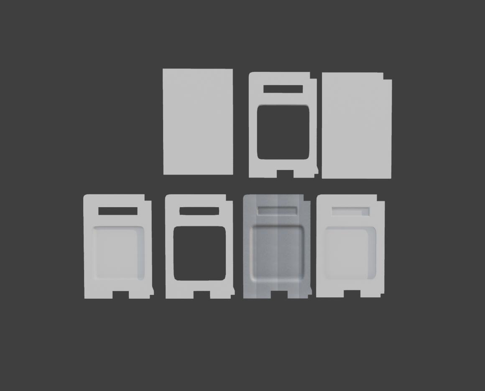
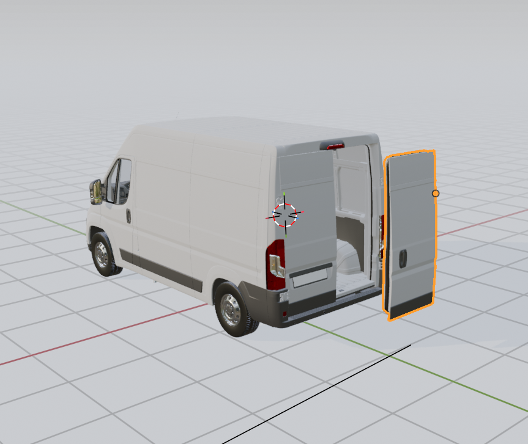
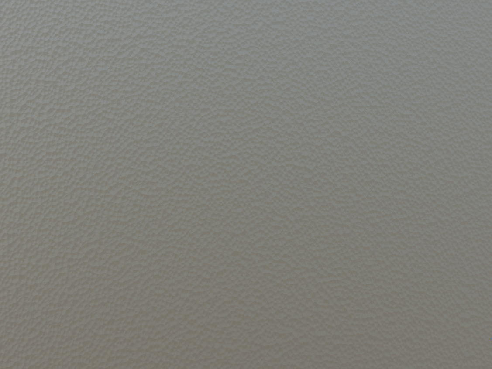
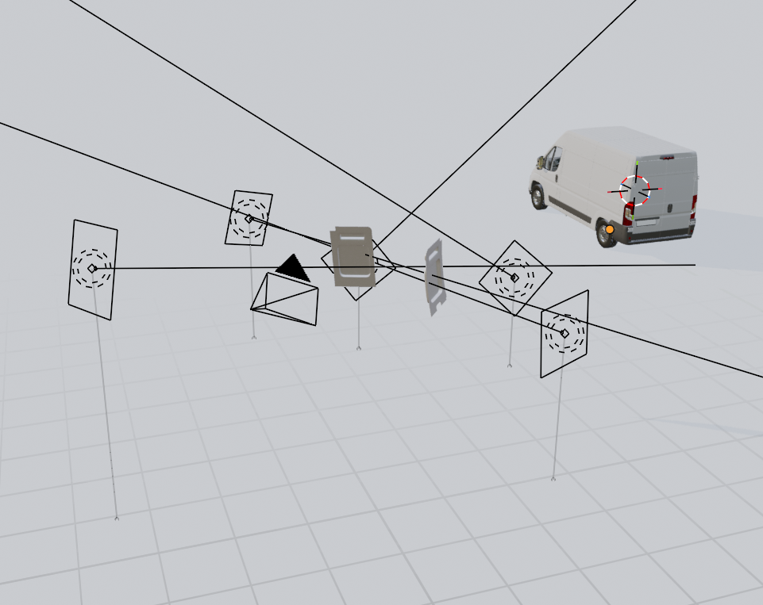

I worked with a Bulgarian client to create a 3D "instruction manual" for their DIY campervan panels. This was my first real-world project where I had to learn 3D modeling from scratch while following specific client requirements.
The main objective was to show exactly how these panels fit into a van, making the installation process easy for their customers to understand.
I started with a few reference photos, adding edges to a mesh plane for all the indentations of the panel.
To keep the workflow flexible, I used a Subdivision Surface modifier with vertex creases for rounded edges and a Solidify modifier to add thickness. Finally, I used a Simple Deform modifier to give the panels a slight, realistic bend they have in real life.

I used a high-quality van model as the base, but it needed a few changes to work in the final animation.
I separated the doors and all their individual parts, then manually reset the origin points to the hinges. This allowed me to animate the doors opening and closing naturally.

The client provided a photo of the panel texture, which I initially used to generate a normal map. However, the resolution was a bit too low for the close-up shots I wanted to achieve.
I also experimented with a noise node but ended up using a serrated plastic texture from Blenderkit.

To show how the panels integrate with the van, I built a custom "fading" effect using transparent and map range nodes in Blender. This allowed the panels to materialize right into the frame, creating a smooth transitions between scenes.
I then animated the panels snapping into their specific positions and the screws twisting into place.
